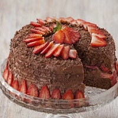

Bolo de Chocolate com Morango
Ingredientes
Massa
- 5 ovos
- meia xícara (chá) de açúcar
- 1 xícara (chá) de farinha de trigo
- 3 colheres (sopa) de Chocolate em Pó
- meia colher (sopa) de fermento em pó
Recheio e Cobertura
- 1 caixinha de morangos (300 g)
- 1 Leite moça (lata ou caixinha) 395g
- meia xícara (chá) de amido de milho
- 300 g de Chocolate Meio Amargo
- 1 lata de Creme de Leite
Modo de preparo
Massa
- Em uma batedeira, bata os ovos até dobrar de volume, acrescente o açúcar e bata bem.
- Desligue a batedeira, misture aos poucos e delicadamente a farinha de trigo, o Chocolate em pó e o fermento em pó peneirados.
Recheio e Cobertura
- Separe alguns morangos para a decoração, corte em fatias o restante e reserve.
- Em uma panela, coloque o Leite moça, o Leite ninho, e o amido de milho e leve ao fogo médio mexendo sempre até engrossar.
- Retire do fogo, acrescente metade do Chocolate e misture delicadamente até o Chocolate derreter e incorporar ao creme.
- Acrescente o Creme de Leite e misture até ficar homogêneo.
Montagem
- Com uma faca serrilhada, corte a massa do bolo em duas partes.
- Recheie com metade do creme e com os morangos fatiados.
- Cubra com o restante do creme.
- Decore com o restante do Chocolate ralado em ralo grosso e com os morangos inteiros reservados.